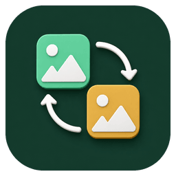

FileX / Strumenti
L’ecosistema FileX
Ogni lavoro. Lo strumento giusto.
Dieci applicazioni disponibili e una dock intelligente. FileX ID Photo velocizza la preparazione e la stampa di fototessere, carte d’identità e passaporti.
FileX Dock
Launcher laterale, notifiche e accesso immediato all'ecosistema.
Image Select Pro
Selezione, confronto, classificazione e XMP.
Archivio Flow
Importazione da SD e organizzazione lavori.
FileX Backup Guard
Clone verificato, recupero e protezione Lightroom.
FileX Send
Invio e ricezione locale o remota tramite QR e link.
Image Party Frame
Cornici, template e lavorazioni in batch.
Batch Print Layout
Impaginazione automatica pronta per la stampa.
FileX ID Photo
Fototessere e foto passaporto: dalla foto del cliente al foglio pronto da stampare, in pochi passaggi.

Image Converter
Conversioni e preset per ogni destinazione.
Trova Foto da Lista
Recupero file, mancanti e duplicati.
Adobe Cleaner
Pulizia controllata dell’ambiente Adobe.